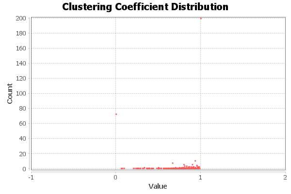

Clustering Coefficient Metric Report
Parameters:
Network Interpretation: undirected
Results:
Average Clustering Coefficient: 0.829
Total triangles: 93128
The Average Clustering Coefficient is the mean value of individual coefficients.

Algorithm:
Matthieu Latapy, Main-memory Triangle Computations for Very Large (Sparse (Power-Law)) Graphs, in Theoretical Computer Science (TCS) 407 (1-3), pages 458-473, 2008